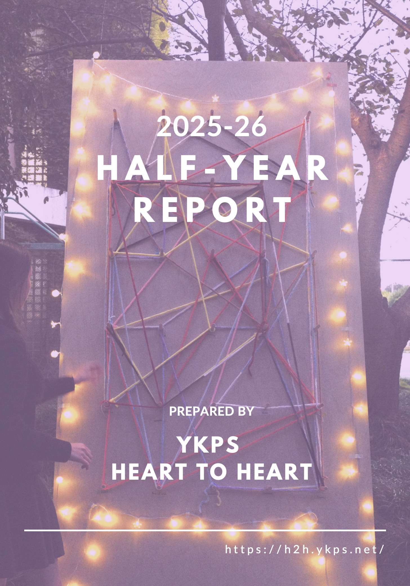

Heart to Heart · YK Pao School
Donor Relations
Reports
Financial Reports
Full transparency on fundraising, fund allocation, and community impact.

Half-Year Report · 2025–2026
2025–26 Half-Year Report
Events, fundraising outcomes, fund allocation, and patient impact for the first half of Academic Year 2025–26.